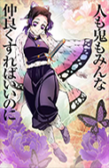

Selecione um Hashira:
-

- 
-

Giyu Tomioka
“ Não chore. Não se desespere. Agora não é hora para isso. [...] Sinta a raiva. A poderosa raiva pura de não ser capaz de perdoar se tornará seu impulso inabalável para agir! ”